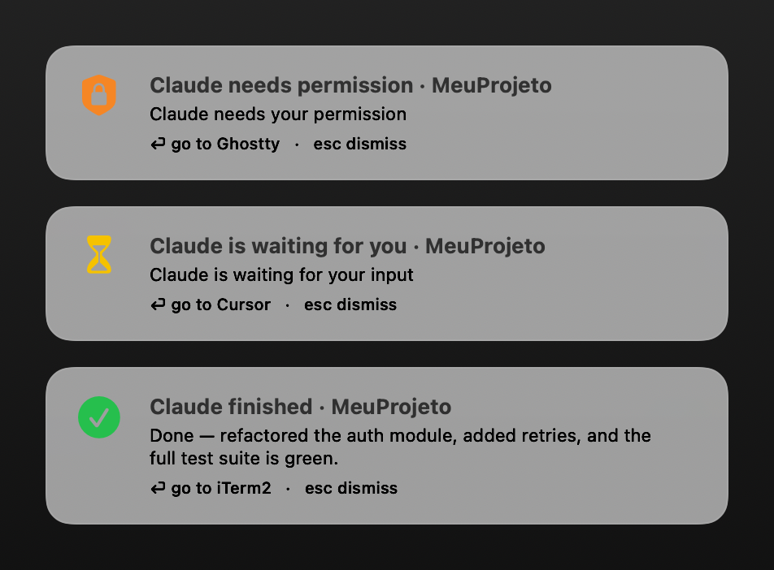
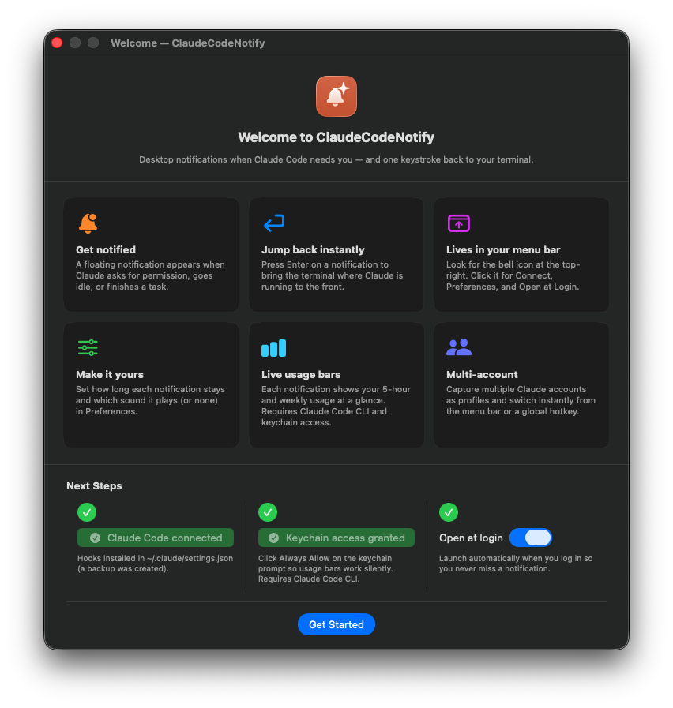
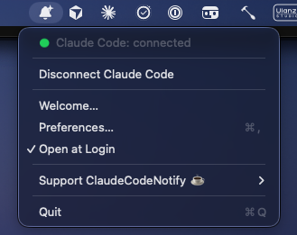

ClaudeCodeNotify
Desktop notifications when Claude Code needs you — one keystroke back to your terminal.
macOS 13+ · Apple Silicon · free & open source

It’s a notifier, not a gatekeeper. It doesn’t block tools or decide permissions — you still approve or deny in the terminal. It just makes sure you notice, and gets you there fast.
Everything it does
-
Get notified
A floating notification appears when Claude asks for permission, goes idle waiting for input, or finishes a task.
-
Enter → jump to your terminal
Detects the exact app Claude runs in — Ghostty, iTerm, Terminal, Cursor, VS Code — and brings it to the front.
-
Make it yours
Set how long each notification stays on screen and which sound plays — pick a system sound, or none at all.
-
Lives in your menu bar
A bell icon with a connection status dot. Connect or disconnect anytime — no Dock icon, no clutter.
-
Local & private
A tiny local server on
127.0.0.1with a token. Nothing leaves your machine. -
Free & open source
MIT-friendly and fully on GitHub. Read the code.
See it in action


Download
Option 1: Homebrew (Recommended)
The easiest way to install. It bypasses Gatekeeper warnings automatically:
brew install narlei/tap/claudecodenotifyOption 2: Manual Download. Get the latest drag-to-Applications .dmg from GitHub Releases.
Download latest .dmgFirst launch (unsigned app)
The app is ad-hoc signed (no paid Apple account), so Gatekeeper will warn you the first time. Either right-click → Open, or clear the quarantine flag:
xattr -dr com.apple.quarantine /Applications/ClaudeCodeNotify.appRequirements: macOS 13+, Apple Silicon.
Support the project
ClaudeCodeNotify is free and open source. Every little tip keeps me motivated to make the app better — thank you! 💛
contato@narlei.com